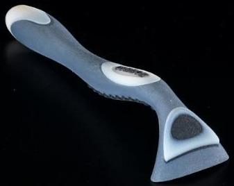
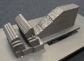

Not: Þemadaki baþlýklarý týklayarak, direkt açýklama sayfalarýný görebilirsiniz.
Püskürterek harç yýðma
tekniðinde, akýþkan halde olan inþa malzemesi bilgisayar
kontrollü bir veya birden fazla meme yardýmýyla damlacýklar
halinde yüzeye püskürtülerek katmanlar inþa edilir. Çoðunlukla
(memeden çýkýþ öncesi veya sonrasý) sýcaklýkla eritilerek
sývý hale getirilmiþ bir inþa malzemesi kullanýlýr ve
sertleþme soðuma ile gerçekleþir. Fakat, Objet örneðinde
olduðu gibi, ýþýk ile kür olarak, sývý halden katý
hale geçen fotopolimerleri kullanan sistemler de vardýr:
Mart 1994'de Sanders
Design International (SDI) tarafýndan kurulan
Sanders Prototype, Inc. (SPI) firmasý ayný yýl
ModelMaker markasý altýnda ilk otoinþa cihazý
modelini piyasaya sürmüþtür. SPI, 2 Ekim 2000
tarihinden sonra ise ismini Solidscape olarak
deðiþtirmiþtir. Bu deðiþiklikle birlikte Solidscape
daha ziyade kuyumculuk sektörüne yönelik cihaz
geliþtirmekte ve küçük boyutlu hassas döküm modelleri
üretimini hedeflemektedir. SDI ise, temelde ayný
otoinþa teknolojisiyle daha hassas ve büyük ölçekli
modellerin üretiminde kullanýlacak farklý otoinþa
cihazý modelleri geliþtirmektedir.
Saðda,
9 Nisan 1996'da Royden Sanders ve çalýþma arkadaþlarý
tarafýndan Sanders Prototypes Inc. (Wilton, NH)
adýna, geliþtirdikleri cihazla ilgili alýnan ilk
patente ait bir resim görülmektedir: "3-D model
maker" baþlýklý ve 5,506,607 no'lu bu patentle
ilgili ilk baþvurularý aslýnda 25 Ocak 1991'de
yapýlmýþtý ama yapýlan düzeltmeler ve yeni ek
baþvurular sebebiyle patent alýnmasý 5 sene sürmüþtür.
3D
Plotting (3 boyutlu çizici) teknolojisi. Bu da
damlacýklar halinde erimiþ polimeri (wax - mum)
püskürten bir otoinþa teknolojisidir.
Asýl inþa malzemesi
yeþil, destek malzemesi ise kýrmýzý ile gösterilmiþtir.
Herbir malzeme
için bir meme kullanýlmýþtýr.
Destek malzemesi
inþa bitiminde özel bir sývý banyosunda 10 dakikada
eritilerek ayrýþtýrýlýr.
Solda, "ModelMaker II".
operatörü solundaki ekranda gözüken tasarýmý inþa ediyor.
Saðda ise üretilecek parça ekranda görülmektedir. Daha
sonra geliþtirilen modele ise PatternMasterT adý verilmiþtir:
ModelMaker
II
teknik özellikleri:
Ýnþa zarfý: X = 304 mm, Y = 152 mm, Z = 215 mm
Katman kalýnlýðý: 0.013 - 0.076 mm arasý seçilebilir
deðiþken.
Yüzey pürüzlülüðü: 32-63 mikro-inç (RMS)
Minimum üretilebilecek detay büyüklüðü: 0.254 mm
Damlacýk çapý: 0.076 mm
ProtoBuildT inþa malzemesi: (Termoplastik), Erime sýcaklýðý:
90
- 113 °C
ProtoSupportT destek malzemesi: (Doðal ve sentetik mum
ve yað esteri) Erime sýcaklýðý: 54 - 76 °C, BIOACTT
VSO banyosunda 50 - 70 °C arasýnda çözünürlüðe sahip.
PatternMaster teknik özellikleri:
Ýnþa zarfý: X = 304 mm, Y = 152 mm, Z = 215 mm
Katman kalýnlýðý: 0.013 - 0.076 mm arasý seçilebilir
deðiþken. (0.0005, 0.0010, 0.0015, 0.0020, ve 0.0030
inç katman kalýnlýklarý için kalibre edilmiþ konfigürasyonlara
sahiptir)
Yüzey pürüzlülüðü: 32-63 mikro-inç (RMS)
Minimum üretilebilecek detay büyüklüðü: 0.254 mm
Solidscape,
18-09-2002 de yaptýðý bir duyuru ile daha yüksek performans/maliyet
oranlý ve önceki modellere kýyasla küçük bir inþa zarfýna
sahip T66 modelini piyasaya çýkartmýþtýr: T66 personal modeler system teknik özellikleri:
Ýnþa zarfý: X = 152.4 mm, Y = 152.4 mm, Z = 152.4 mm
Katman kalýnlýðý: 0.013 - 0.076 mm arasý seçilebilir
deðiþken.
Yüzey pürüzlülüðü: 32-63 mikro-inç (RMS)
Minimum üretilebilecek detay büyüklüðü: 0.254 mm
Solda, parçanýn inþasýnýn
yarýsýna gelindiðinde alýnan bir fotoðraf görülmektedir.
Yeþil, ana malzemenin etrafýnda koruyucu görevi gören
kýrmýzý destek malzemesine dikkat ediniz...
Saðda: Parçanýn bitmiþ
hali gözükmektedir. Destek malzemesi özel bir çözücüde
eritilmiþtir.
Saðda arkada, ayný cihazla inþa edilmiþ plastik bir yüzük
modeli. Normalde bir ustanýn 1-2 haftada el ile yontarak
yaptýðý balmumu modeller artýk bu cihaz ile 1 günde bitebilmektedir.
Yanlýz artýk tasarýmýn bilgisayarla yapýlmasý gerekmektedir.
Bunun için özel geliþtirilen JewelCAD
isimli bir program bu cihazýn kuyumculuk sektöründe kullanýlmasýný
çok kolaylaþtýrmýþtýr. Ülkemizde de 80'den fazla JewelCAD
lisansý kullanýlmaktadýr. JewelCAD 1994 yýlýnda Hong Kong
tabanlý bir firma tarafýndan piyasaya sunulmuþtur.
Hassas
döküm ile daha sonra istenilen metalden (altýn ve
gümüþ gibi) yüzük dökülebilir. Saðda hassas döküm ile
imal edilmiþ gümüþ parça. Ortada ise bitmiþ yüzük görülmektedir.
Sanders
Design International (SDI) 1982 yýlýnda Royden C. Sanders,
Jr., tarafýndan bir Ar-Ge þirketi olarak kurulmuþtur.
Çekirdeðinde az sayýda fakat nokta vuruþlu yazýcýlar
konusunda geniþ bilgi birikimi ve tecrübesi olan bir
mühendislik ekibi bulunan SDI, daha sonralarý sýcaklýkla
erimiþ mürekkep püskürtme (hot-melt, ink-jet) teknolojisinin
hassas hýzlý prototip imalatý uygulamalarý konusunda
araþtýrmalar yapmýþ ve Mikro-Damlacýkla Ýnþa (Micro-DropletT
fabrication, MDF) ismini verdiði yeni bir otoinþa tekniði
geliþtirmiþtir. SDI, 12 mikronluk küçük detaylarý olan
ve 1 mikrondan düþük yüzey pürüzlülüðüne sahip modelleri
iþa edebilecek otoinþa cihazlarýyla rakiplerinden ve
CNC cihazlarýndan hasassiyet yönüyle daha üstün olduðunu
iddia etmektedir.
Üniversiteler ve NASA gibi araþtýrma merkezleriyle yapýlan
çalýþmalarda seramik ve metal malzemeler de denenmiþtir;
Bu uygulamada malzeme yüzeye direkt püskürtülmek yerine
her katmanýn çeperleri erimiþ polimer püskürtülerek
inþa edilmekte ve aradaki boþluða seramik veya metal
tozu içeren sývý doldurulmaktadýr (Bu teknik Generis-Wax
tekniðiyle benzerlik arzetmektedir).
SDI,
ilk ticari ürünlerini ModelMaker markasý altýnda 1994
yýlýnda kurduðu Sanders Prototype International (SPI)
firmasý üzerinden pazarlamýþtýr. SPI, 2000 yýlýnda ismini
Solidscape olarak deðiþtrimiþtir.
Bu deðiþiklikle
birlikte Solidscape daha ziyade kuyumculuk sektörüne
yönelik cihaz geliþtirmekte ve küçük boyutlu hassas
döküm modelleri üretimini hedeflemektedir.
Solda, SDI ise, temelde ayný otoinþa teknolojisiyle
daha hassas ve büyük ölçekli kalýp modellerinin üretiminde
kullanýlacak Rapid
ToolMaker (RTM) markalý modelleri geliþtirmektedir.
RTM sistemini bazý teknik özellikleri aþaðýda verilmiþtir:
Ýnþa Zarfý: 450 x 300 x 300 mm (X,Y,Z)
Katman kalýnlýðý: 12 ile 125 mikron arasýnda deðiþtirilebilir.
Püskürtülen Mikro-Damlacýklarýn çapý: Ortalama 75 mikron.
Ýnþa malzemesi: Mum benzeri bir polimer, erime sýcaklýðý:
90 - 113 °C
Destek malzemesi: Mum benzeri bir polimer, erime sýcaklýðý:
55 - 65 °C
RTM proses videosu
Her katmanýn inþasýndan sonra bir freze ile yüzey traþlanýr
ve bir sonraki katman için düzgün bir yüzey saðlanýr.
Daha hassas üretim ihtiyaçlarý için traþlama daha fazla
yapýlarak daha ince katman kalýnlýðý kullanýlýr. Frezeleme
sýrasýnda ortaya çýkan talaþlar bir vakum sistemi ile
yüzeyden çekilir. Ýnþa sonrasý destek malzemesi özel
bir çözücü sývý ile ayrýþtýrýlýr.
Saðda,
RTM cihazýndan elde edilen mum modellerin hassas dökümüyle
elde edilmiþ çelik bir kalýp görülmektedir. Onun saðýnda
ise kuyumculuk uygulamalarýna örnek olarak RTM ile inþa
edilmiþ bir yüzük modeli görülmekte.
Resimleri daha büyük görmek için üzerlerini
klikleyiniz.
Not: SDI
firmasýnýn Avrupa'daki ortak geliþtiricilerinden Buss
Müller Technology GmbH firmasý da High Precision
Modeler 700 ticari ismi altýnda ayný cihazý pazarlamaktadýr
(www.bmtec.com).
Ayný firma, 3D
colour printer ismiyle farklý bir cihazýn da ticari
hale getirilmesi için çalýþmaktadýr.
3D Systems, ofis içi
kullanýma uygun, 3D yazýcý kategorisinde Þubat 1996'da
piyasaya sürdüðü ilk otoinþa cihazý modeline Actua 2100
ismini vermiþti, sonradan bu model geliþtirilerek ThermoJet
"Solid Object Printer" (Katý Cizim Yazýcýsý) isimini
aldý.
Actua 2100 yazýcý kafasýnda
96 meme vardý, ThermoJet cihazýnda bu sayý 352'ye çýkarýlmýþtýr.
ThermoJet, X, Y ve Z eksenlerinde sýrasýyla 300dpi,
400dpi ve 600dpi çözünürlüðe ve 250 x 190 x 200 mm inþa
zarfýna sahiptir. ThermoJet modelleri, termopolimer
malzemenin uygunluðu sayesinde, hassas döküm ile prototip
imalatýnda da kullaným alaný bulmuþtur.
Actua
2100
ThermoJet
Ekim 2001'de yapýlan bir
anlaþmayla ThermoJet cihazlarý WaxPro
markasý altýnda CYNOVAD firmasý tarafýndan diþ laboratuvarlarýnda
model üretmek için pazarlanmaya baþlanmýþtýr.
Saðda, MJM (Multi Jet
Modeling / Çok Jetli Modelleme) tekniði görülmektedir.
3D Systems, genellikle açýk hava reklamcýlýðýna yönelik,
ýsýtýlarak püskürtülen mürekkep püskürtmeli yazýcýlarda
kullanýlan "hot melt ink-jet printing" teknolojisini
kendi otoinþa sistemlerine uyarlamýþtýr. Bu teknikte,
yazýcý kafaya bir pompa ile beslenen, sýcaklýkla eritilmiþ
inþa malzemesi, piezo-elektrik anahtarlama ile çalýþan
birçok memeden püskürtülerek katmanlar oluþturulur. Ýnþa
malzemesi olarak parafin içeren, mum benzeri bir tür termopolimer
kullanýlýr. Yazýcý kafa X ekseninde hareket ederken, tabla
da Y ve Z ekseninde hareket eder. Y ekseni, kafanýn yaptýðý
8 geçiþle tamamlanýr. 352 memeden bir veya birkaçýnýn
týkanmasý durumunda, inþa edilen parçanýn hep ayný bölgesinin
artan bir hataya maruz kalmamasý için Y ekseninde hareket,
her yeni katman inþasýnda þaþýrtmalý olarak (randomization)
yapýlýr.
Saðda:
Her katmanýn inþasý sýrasýnda yüzeyde oluþan pürüzleri
düzeltmek ve Z eksenindeki büyümeyi (katman kalýnlýðýný)
hassas bir þekilde kontrol altýna almak için 600rpm hýzýnda
dönen, 130oC
sýcaklýða kadar ýsýtýlmýþ, üzeri pürüzlü, düzeltici bir
merdane (planarizer) kullanýlýr. Merdane üzerinde biriken
inþa malzemesi, bir kanatçýk (mavi renkli) ile merdaneden
silinerek vakumla oluþturulan hava akýmýyla temizlenir.
ThermoJet
cihazýnda, destek olarak farklý bir malzeme kullanýlmaz;
Destek olunacak yüzeyin altýna inþa edilen sýk ve ince
destek çubuklarý inþa sonrasýnda bir fýrça ile kýrýlarak
manuel olarak temizlenir. Destek çubuklarýnýn daha kýrýlganlaþarak
kolay temizlenebilmesi için inþa sonrasýnda modellerin
(buzdolabýnda bekletilerek veya diðer yöntemlerle) 10
°C'nin altýnda bir sýcalýða düþecek þekilde soðutulmasý
gerekir. Saðda ThermoJet ile gri renkli inþa malzemesi
kullanýlarak inþa edilmiþ bir model ve bu modelin harcanmasýyla
hassas döküm ile elde
edilmiþ alüminyum parça görülmektedir.
3D
Systems, MJM (Multi Jet Modeling / Çok Jetli Modelleme)
serisi yeni cihazý InVision 3-D printer cihazýný
ilk defa 2 Temmuz 2002'de ABD'nde düzenlenen SIGGRAPH
2002 fuarýnda teþhir etmiþti. 13 Kasým 2003'de ABD'nde
39500 USD fiyattan ticari hale gelen InVision
3-D printer teknik özellikleri aþaðýda verilmiþtir:
Jet
meme sayýsý: 448 (224 adet inþa 224 adet destek malzemesi
püskürtme için)
Ýnþa zarfý: 298 x 185 x 203 mm (xyz)
Çözünürlük: 328 x 328 x 606 DPI (xyz)
Katman kalýnlýðý 606 DPI = 0,04mm
Model inþa malzemesi: Akrilik fotopolimer reçine
Destek malzemesi: Parafin tabanlý termopolimer (mum).
Ýnþa sonrasý 70°C sýcaklýkta eritilerek temzilenir.
Ýnþa hýzý: 5mm/saat yükseklik (z)
InVision
3-D printer, ThermoJet gibi
ofis ortamýnda çalýþmak üzere tasarlanmýþ bir otoinþa
cihazýdýr. ThermoJet'den farklý olarak, kullandýðý akrilik
(acrylic) fotopolimer inþa malzemesi sayesinde yüksek
mukavemetli model ve prototipleri daha hýzlý ve hassas
bir þekilde üretebilir. Bu cihaz fotopolimer malzeme
püskürtmesi sebebiyle Objet ile
benzerlik göstermektedir. Yalnýz, sývý fotopolimer yerine,
Denken
(SolidJet) cihazýna benzer þekilde oda sýcaklýðýnda
katý (jel) halinde olan bir tür fotopolimer kullanýlmaktadýr.
Bu, henüz kür olmamýþ ve katý haldeki fotopolimer sýcaklýkla
eritilerek memelerden püskürtülür ve soðuyarak katýlaþmasýnýn
ardýndan UV (kýzýl ötesi) ýþýk altýnda kür edilir. InVision,
destek yapýsý için ise farklý bir mum malzeme kullanmaktadýr.
Ýnþa ve destek malzemeleri kartuþlar halinde makineye
yüklenir.
Destek
malzemesi inþa sonrasý sýcaklýkla eritilerek temizlenir.
3D
Systems, kuyumculuk sektörü için geliþtirdiði, daha
yüksek çözünürlüðe sahip
"InVision HR (High
Resolution / yüksek çözünürlük)
3-D Printer" isimli
cihazýný ilk
defa 15-22 Nisan 2004 tarihlerinde Ýsviçre'de düzenlenen
BaselWorld 2004, Mücevher Fuarý'nda sergilemiþtir.
Bu yeni cihaz direkt hassas döküme uygun olan %20 mum
katkýlý bir inþa malzemesi kullanmaktadýr.
Bu cihazýn dýþ görünümü
ve meme sayýsý InVision
3-D printer ile
aynýdýr. Yalnýz cihazýn yazýlým ve donanýmlarýnda yapýlan
bazý deðiþikliklerle daha ince katmanlarla daha küçük
bir inþa zarfýnda daha yavaþ fakat daha yüksek çözünürlüklü
bir inþa gerçekleþtirilmektedir. Aþaðýda InVision
3-D printer teknik
özellikleri verilmiþtir:
Jet
meme sayýsý: 448 (224 adet inþa 224 adet destek malzemesi
püskürtme için)
Ýnþa zarfý: 127 x 178 x 50 mm (xyz)
Çözünürlük: 656 x 656 x 800 DPI (xyz)
Katman
kalýnlýðý 800 DPI = 0,032mm
Model inþa malzemesi: %20 mum içeren akrilik fotopolimer
reçine
Destek malzemesi: Parafin tabanlý termopolimer (mum).
Ýnþa sonrasý 70°C sýcaklýkta eritilerek temzilenir.
Ýnþa hýzý: 2,5mm/saat yükseklik (z)
Aþaðýdaki 3 resimde
InVision HR 3-D Printer ile üretilmiþ bazý modeller
görülmektedir. Soldaki resimde inþa sonrasý platform
görülmektedir; Tabladaki beyaz bölgeler destek, mavi
bölgeler ise inþa malzemesidir. Ortadaki ve saðdaki
resimlerde destek malzemesi eritilerek temizlenmiþ modeller
görülmektedir. Saðdaki resimde bir hassas döküm sonucu
da görülmektedir.
Daha
önce kapanmýþ olan Ýsrail tabanlý Cubital
firmasýnýn 1987'den itibaren aldýðý patentlerin tüm
haklarý Mayýs 2001'de Objet tarafýndan devralýnmýþtýr.
Yukarýda, ilk ticari
model Objet Quadra görülmektedir. 1536 adet memeden
püskürtülen inþa malzemesi her katman oluþtuktan sonra
iki adet UV lamba ile kür edilir. Memeler UV lambalar
arasýna yerleþtirilmiþtir. Suda çözünebilen ikinci bir
fotopolimer destek mazlemesi de ayný þekilde püskürtülerek
kür edilir. Ýnþa sonrasýnda jel benzeri destek yapýsý
güçlü bir su spreyi yardýmýyla çözülerek temizlenir.
x, y, z eksenlerinde sýrasýyla 600, 300 ve 1270 dpi
(20 mikron) çözünürlüðe sahiptir. Ýnþa zarfý: 270mm
x 300mm x 200mm (yükseklik).
PolyJet
prosesi (Mayýs 2006)
Yukarýda, Objet Quadra
ile üretilmiþ bazý modeller görülmekte
Bir
dizi deneme üretimi ve potansiyel müþterilerdeki testlerinin
ardýndan ilk kez Ekim 2001'de ABD'nde Objet Quadra satýþýna
baþlanmýþtýr. Sonraki yýllarda ise daha geliþmiþ modellerin
geliþtirilmesinin ardýndan Objet Quadra'nýn üretimi
durdurulmuþtur:
Soldaki
resim: Objet, 27 Kasým 2001 tarihinde ise QuadraTempoT
modelini duyurmuþtur. 2002 baþýnda ticari olan bu yeni
model birtakým yazýlým ve donaným geliþtirmeleri sayesinde
toplam inþa süresini, bir önceki Objet Quadra modelinden
%20-25 daha kýsa zamanda tamamlayabilmektedir. PolyJetT
markalý teknolojiyi kullanan bu model ayný zamanda iki
adet UV lambaya ve daha büyük malzeme kartuþ kullanma
seçeneðine sahiptir. QuadraTempo
teknik özellikleri:
Ýnþa zarfý: 270mm x 300mm x 200mm
Çözünürlük:
X= 600 dpi: 0,042 mm
Y= 300 dpi: 0,084 mm
Z= 1270 dpi: 0,021 mm
Objet
Geometries Ltd., 13 Mayýs 2003 tarihinde QuadraTempo'nun
daha geliþmiþ bir modeli olan Eden330 modelini
duyurmuþtur. Dýþ görünüþü QuadraTempo ile benzer olan
bu yeni sistem önceki modele nazaran daha ince katmanlarla
inþa yapma kabiliyetine sahiptir. Ayrýca, bu yeni model
ile birlikte FullCureT
700 isimli, daha yüksek mekanik dayanýma sahip yeni
bir fotopolimer inþa malzemesi de geliþtirilmiþtir (öncekine
kýyasla 3 kat daha esnek, iki kat daha saðlam olan bu
malzeme ile 0.6mm et kalýnlýðýnda parçalar inþa edilebilir).
Eden330 teknik özellikleri:
Ýnþa zarfý: 336mm x 326mm x 200mm
Çözünürlük:
X= 600 dpi: 0,042 mm
Y= 300 dpi: 0,084 mm
Z= 1600 dpi: 0,016 mm
(toplam jet meme sayýsý belirtilmemiþtir)
Eden330
modelinin piyasaya sürülmesinin ardýndan, 2003 sonlarýna
doðru QuadraTempo'nun üretim ve satýþý durdurulmuþur.
Objet
Geometries Ltd., 05 Nisan 2004 tarihinde, daha küçük
bir inþa zarfýna sahip Eden260 modelini duyurmuþtur.
Eden260 teknik özellikleri:
Ýnþa zarfý: 256mm x 250mm x 203 mm
Ýnþa hýzý: 1,25 cm yükseklik/saat
Boyutsal hassasiyet: 0,1 - 0,2 mm
Çözünürlük:
X= 600 dpi: 0,042 mm
Y= 300 dpi: 0,084 mm
Z= 1600 dpi: 0,016 mm
Jet kafa sayýsý: 8 adet
Objet
Geometries Ltd., Euromold 2005'de (Kasým 2005), büyük
inþa zarfýna sahip Eden500V modelini duyurmuþtur.
Eden500V teknik özellikleri:
Ýnþa zarfý: 490mm x 390mm x 200 mm
Ýnþa hýzý: 1,25 cm yükseklik/saat
Boyutsal hassasiyet: 0,1 - 0,3 mm
Çözünürlük:
X= 600 dpi: 0,042 mm
Y= 600 dpi: 0,042 mm
Z= 1600 dpi: 0,016 mm
Jet kafa sayýsý: 8 adet
Objet
Geometries Ltd., Aralýk 2005'de, Eden350V ve
Eden350 modellerini duyurmuþtur.Bu modeller
Eden330'dan biraz daha büyük bir inþa zarfýna ve Y ekseninde
2 kat fazla çözünürlüðe sahiptir. 350V modeli ise 350
modelinden daha yüksek bir inþa hýzýna sahiptir.
Eden350 ve 350V teknik özellikleri:
Ýnþa
zarfý: 350mm x 350mm x 200 mm
Çözünürlük:
X= 600 dpi: 0,042 mm
Y= 600 dpi: 0,042 mm
Z= 1600 dpi: 0,016 mm
Jet
kafa sayýsý: 8 adet
Objet
Geometries Ltd., Ocak 2006'da, küçük inþa zarfýna sahip
yeni modeli olarak Eden250'i duyurmuþtur.
Eden250 teknik özellikleri:
Ýnþa
zarfý: 250mm x 250mm x 200mm
Boyutsal hassasiyet: 0,1 - 0,2 mm
Çözünürlük:
X= 600 dpi: 0,042 mm
Y= 300 dpi: 0,084 mm
Z= 1600 dpi: 0,016 mm
Objet
Geometries Ltd., 2008 baþýnda farklý mekanik özellikte (yumuþak ve sert) iki inþa malzemesini karýþtýrabilen "PolyJet MatrixT 3D printing technology" adýný verdiði teknolojiye sahip Connex 500 modelini piyasaya sürdü. Bu cihaz, inþa edilen parçanýn içindeki mekanik özellikleri farklý yapabilen ilk ticari cihaz olmuþtur. (shore25 ile shore95 aralýðýnda 21 çeþit kompozit malzeme seçimi
yapýlabilir)
Ýnþa
zarfý: 500mm x 400mm x 200mm
Boyutsal hassasiyet: 0,1 - 0,2 mm
Çözünürlük:
X= 600 dpi: 0,042 mm
Y= 300 dpi: 0,084 mm
Z= 1600 dpi: 0,016 mm

Yumuþak ve sert, iki farklý inþa malzemesinin kullanýldýðý örnekler
Malzeme
seçenekleri:
Objet,
farklý ihtiyaçlara uygun malzeme seçenekleri sunmaktadýr;
Bunu diðer otoinþa tekniklerinden
ayýran önemli bir nokta, cihazýn erimiþ mum damlacýklarýný
püskürterek katmanlarý direkt oluþturmak yerine sadece
katmanlarýn dýþ çeperlerini inþa etmesidir. Ýnþa edilen
parçanýn katmanlarý ise ayrýca eritilmiþ farklý bir mum
malzemenin yayýlarak boþluklara doldurulmasýyla gerçekleiþir:
Solda: Erimiþ,
ayýrýcý mum damlacýklarý hareketli bir yazýcý kafasýndan
püskürtülerek katman çeperi oluþturulur. Bu mum, suda
çözülebilme özelliðine sahiptir. Ortada: Katmanýn
içi ve dýþý birlikte, erimiþ farklý bir mum malzeme
ile doldurulur. Bu malzemenin erime sýcaklýðý önceki
ayýrma mumundan daha düþük olduðu için, bu iþlem sýrasýnda,
önceki safhada inþa edilen katman duvarlarýnýn eriyerek
bozulmasý önlenmiþ olur. Çeperlerin dýþýnda kalan kýsýmlardaki
malzeme ise destek görevi üstlenir. Saðda: Önceki
iþlemler tüm katmanlar için tekrarlanýp inþa bittikten
sonra ayýrýcý mum suda eritilerek parça elde edilir.
Bu teknoloji ticari
hale gelemeden Generis firmasý web sitesi faaliyetini
durdurmuþtur. Muhtemelen Generis, Extrude Hone tarafýndan
satýn alýndýðý için bu teknoloji artýk ProMetal
bünyesinde geliþtirilebilecektir.
1989 yýlýnda kurulan BPM,
1995 yýlýnda ilk ticari cihazýný üretmiþtir.
BPM tekniðinde, 5 eksen
ile kontrol edilen bir memeden, inþa edilen yüzeye sürekli
dik olarak erimiþ plastik partiküller halinde püskürtülür
(Continuous Articulation of Normals). Bu firmanýn cihazý
ucuz (35000$) olmasýna raðmen imalat kalitesinin ve hýzýnýn
yetersiz olmasý sebebiyle piyasada tutunamamýþtýr.
Solda: BPM Personel Modeler.
250x203x150mm ölçülerinde bir inþa zarfýna sahiptir.
Ortada: cihazýn çalýþma
prensibi (Büyük
resim: 750 x 373 Piksel, 39 KB)
Görüldüðü gibi cihaz çok karmaþýk bir yapýya sahiptir.
Bu, cihazýn kolay arýza yapmasýnýn yanýnda düþük
hýz ve hassasiyete sahip olmasýna sebep olan önemli bir
faktördür.
Saðda: Bir model inþa edilirken...
Afit,
fotokopi ve lazer yazýcýlarýn arkasýndaki teknoloji olan
"electrophotography" konusunda Ar-Ge çalýþmalarý
yapan ve bu sektörde birçok ürüne sahip bir Japon firmasýdýr.
Afit, bu birikimini kullanarak 2002 yýlýnda electrophotography
prensibine baðlý olarak tonerin (toz) inþa malzemesi olarak
kullanýldýðý ve PLIGRAPHY ismini verdikleri bir otoinþa
teknolojisi üzerine çalýþtýðýný duyurmuþtur. PLIGRAPHY
yüksek hýz ve hasassiyeti ayný anda elde etme potansiyeline
sahiptir. Bu cihaz 50 mikron rezolusyona sahiptir ve 0.1mm
kalýnlýktaki 200 katmaný 50 dakikada inþa edebilir (24mm/saat
yükselme hýzý). Aþaðýda, PLIGRAPHY teknolojisi ile inþa
edilmiþ üç örnek görülmektedir:
1
2
3
4
1- Kuzey Japon Alplerine ait 1/400000 ölçekli bir arazi
modeli,
2- Þehir maketi,
3- Sprial bir parça modeli,
4- Destek malzemesi kullanýlmadan inþa edilmiþ karmaþýk
bir geometri görülmektedir (inþa sýrasýnda kullanýlmayan
tozlar destek malzemesi iþlevi gördüðünden dolayý ayrýca
bir destek yapýsý inþa etmeye gerek kalmaz).
Aðustos
1999'da MEMGen Corp. (MicroElectroMechanicalGeneration)
ismi altýnda kurulan Microfabrica Inc., Güney California
Üniversitesi'nde (University of Southern California)
Adam Cohen* liderliðinde geliþtirilen ve EFABT (Electrochemical
FABrication / Elektrokimyasal Ýnþa) ismi verilmiþ olan,
mikro düzeyli parçalarýn (micromachines / mikromakineler)
üretiminde kullanýlan bir tür otoinþa teknolojisini
ticari hale getirmiþtir. Eylül 2002'de Vacit Arat
bu firmada yönetici (CEO) olmuþtur:
(www.microfabrica.com/press_room/releases/2002_09_09.htm)
EFAB,
bu sayfada ele alýnan diðer teknolojilerden farklý
olarak inþa malzemesini mekanik olarak püskürterek
deðil, elektrokimyasal olarak yüzeye yýðar:
(a) Ýstenilen bölgelerin seçilmesi için "Instant
Mask" ismi verilen ve elektrokimyasal madde
yýðýlmasýný kontrol eden bir maske kullanýlýr.
(b) Her
katmandaki destek malzemesi ise maskesiz olarak
tüm yüzeye yýðýlýr.
(c) Ardýndan yüzey düzeltilerek istenmeyen bölgelere
kaplanmýþ destek malzemesi uzaklaþtýrýlýr ve bir
sonraki katman için yüzey hazýr hale gelir.
Ýþlemler bu þekilde tekrarlanýr...
Ýnþa
sonrasý destek yapýsýnýn malzemesi kimyasal olarak
eritildiðinde geriye kompleks 3D geometriye sahip
çok küçük ölçekli parça veya makineler kalýr...
Temelde bir inþa ve bir destek malzemesi kullanan
EFAB, birden fazla inþa ve/veya destek malzemesi
kullanarak çoklu malzemeye sahip (multimaterial)
parçalar da üretme potansiyeline sahiptir.
Yarý
iletken (semiconductor) mikroçip, entegre devre ve benzeri
mikro yapýlarý "photolithography / fotolitografi"
tekniðiyle üretimde kullanýlan sabit ýþýk maskeleri yerine
Instant MaskingT isimi verilen bir dinamik maske oluþturma
tekniði EFAB teknolojisinde anahtar rol oynamaktadýr.
Saðda,
EFAB teknolojisiyle üretilmiþ, bazý örnekler görülmektedir.
Ýlk resimde bir nozul dizini görülmekte, ayný resmin
sol alt köþesinde ise 0.5mm boyunda minik bir ivme
ölçer bulunmaktadýr.
Klasik mikroçip üretim tekniðine göre EFAB'ýn þu avantajlarý
vardýr:
1- Yarý iletken üretim tekniklerinden 50 kat daha hýzlý
bir þekilde mikromakine üretebilir.
2- Klasik yöntemler elektronik uygulamalarýna yönelik
olarak en fazla 5 katman üretebilirken EFAB ile yüzlerce
katmandan oluþan mikro yapýlar kolay ve hýzlý þekilde
inþa edilebilir.
3- Yarý iletken üretim teknolojisinin kullanýlmasý çok
zor iken, EFAB tekniði yaygýn olarak bilinen 3D CAD verisini
alarak üretime geçebilir.
4- Yarýiletken üretimi için gerekli ve çok yüksek maliyetli
temiz odalar (clean room) yerine tek bir cihazýn içinde
çok daha düþük maliyetle mikromakine inþasý yapýlabilir.
*Hýzlý
prototip sektörüne yönelik ilk yayýnlardan Rapid
Prototyping Report dergisinin kurucusu olan Adam
Cohen, Soligen'in
de kurucu ortaklarýndandýr. Bir süre 3D Systems bünyesinde
de çalýþmýþ olan Cohen, SLA
250 modelinin geliþtirilerek ticari hale getirilmesinde
önemli rol oynamýþtýr.
Not:
MEMS konusunda geniþ bilgiye www.memsnet.org
sitesinden ulaþýlabilir.
DMD, (Direct Metal
Deposition, Direkt Metal Yýðýlmasý) sisteminde CO2
lazer ile metal tozlarý eritilerek katmanlar halinde parça
inþa edilir. Ýnþa sýrasýnda sýcaklýk, buna baðlý olarak
da soðuyan metalin kristal yapýsý kontrol altýnda tutulur.
Ýnþa sýrasýnda parçanýn deðiþik noktalarýna farklý metal
tozlarý beslenerek kompozit parçalar (DMD Smart Parts)
üretilebilir. Bu sistem, yeni bir parçanýn inþasýnda kullanýlabileceði
gibi, baþka þekillerde imal edilmiþ metal parçalarýn tadilatý
amacýyla da kullanýlabilir. Mesela, aþýnmýþ veya zarar
görmüþ plastik enjeksiyon kalýplarý veya türbin kanatlarý
gibi uçak parçalarý bu sistemle onarýlabilir.
Saðda, POM/DMD yöntemiyle
imal edilmiþ metal bir test parçasý gözükmektedir.
Yukarýsýnda ise ayný
parçanýn SLA cihazý ile imal edilmiþ olaný referans
için verilmiþtir.
Almanya'nýn en eski ve
güçlü lazer kesim tezgahlarý üreticilerinden biri olan
TRUMPF, 2003 Euromold
Fuar'ýnda otoinþa prensibini kullanan iki ürününü sergilemiþtir.
Bunlardan biri, ABD tabanlý POM ile iþbirliði sonucu
ürettiði DMD (Direct
Metal Deposition, Direkt Metal Yýðýlmasý) tekniðini
kullanan DMD 505 modeli otoinþa cihazýdýr. Diðeri ise
Harç yýðma yerine toz baðlama tekniðini kullanan LF
- Laserforming cihazýdýr.
Ýlk olarak Sandia National
Lab.'da geliþtirilen LENS (Laser Engineered Net Shaping)
teknolojisi, sanayi uygulamalarý için OPTOMEC firmasý
tarafýndan lisanslanmýþtýr. Bu teknolojinin temel çalýþma
prensibi aþaðýdaki resimlerde görülmektedir: Ýnþa yüzeyine
püskürtülen metal tozlarý lazer enerjisi ile eritilerek
yüzeye yapýþtýrýlýr.
Metal tozlarý, lazer ýþýnýyla ayný eksende (coaxial)
yüzeye püskürtülür. Odaklama için mercek sistemi
z ekseninde, tabla da inþa kontrolü için x ve
y ekseninde hareket ettirilir.
Saðda:
700 Watt cw Nd:YAG laser kullanan LENS 750 cihazý.
Bu
sistemde, 1400W'lýk çok güçlü bir CO2
lazer kullanýlarak titanyum tozlarý "inert" gaz altý
ortamda eritilerek katmanlar halinde parça inþa edilir.
Yukarýdaki resimde, ortada gözüken sarý dik çizgi
lazer huzmesini, yanlardaki gri renkli kýsýmlar titanyum
tozlarýnýn akýþ yolunu, kýrmýzý kýsým ise ergimenin
gerçekleþtiði bölgeyi temsil etmektedir.
Parça,
inþa bitiminde yeterince hassas ölçülere sahip olmadýðý
için talaþlý imalata gerek duyulmaktadýr. Bu teknoloji,
uzay ve havacýlýk sanayindeki parça imalatý veya onarýmýna
yönelik geliþtirildiði için, hafif ve saðlam olmasý
sebebiyle bu sektörde önemli bir yere sahip olan titanyum
metali inþa malzemesi olarak kullanýlmaktadýr. Lasform
(Laser Forming / Lazerle Þekillendirme) cihazý satýþý
yerine Aeromet firmasý bu cihazý kullanarak dýþarý
servis vermektedir...
Saðdaki resimde 4*4*4 feet
yani 120*120*120cm ebadýnda inþa zarfýna sahip cihaz
görülmektedir.

Solda, Lasform yöntemi
ile titanyumdan inþa edilmiþ parça, saðda ise ayný parçanýn
talaþlý imalat yöntemleriyle iþlendikten sonraki hali
gözükmektedir.
Daha sonralarý MTS
Systems Corporation bünyesinde operasyonlarýna devam
eden AeroMet, Ekim 2005'de stratejik görülmemesi sebebiyle
kapandý. Faaliyeti sona eren web sitesindeki (www.mts.com/aerometcorp.htm)
ilgili not þöyleydi:
For
approximately seven years MTS has invested in laser
additive manufacturing (LAM) technology in hopes of
commercializing the process.
We made many excellent technology advances. These advances
include substantial proprietary process developments
as well as the delivery of LAM based components now
flying on various US military aircraft. We have been
unsuccessful however, in achieving a sustainable business
model. Additionally, continued operations would require
significant further investments.
Since the business is not strategic to MTS, and given
the conditions stated above, MTS has decided to discontinue
AeroMet operations.
H&R
Technology firmasý PMDT (Precision Metal Deposition
- Hassas Metal Yýðma) ismini verdiði teknolojisini ilk
zamanlarýnda esnek tabaka halindeki malzemeler için
býçaklý kesme kalýplarý imal etmek amacýyla kullanmýþtýr.
Saðda görülen MACH-II modeli cihaz tam otomatik olarak
kesme kalýbý üretebilir. Lazer enerjisi ile metal bir
tel eritilip yüzeye kaynaþtýrýlarak býçak inþa edilir
ve ardýndan yine ayný cihazýn içinde bulunan bir talaþlý
imalat sistemiyle býçaklarýn bilenmesi de tamamlanýr.
PMDT
düz tel lazer metal yýðma (flat wire laser metal deposition)
tekniðiyle, benzer teknolojilere kýyasla küçük miktarda
eriyik metal bulunduðu ve buna baðlý olarak termal gerilimler
de düþük az olduðu için daha az çarpýlmayla daha kontrollü
ve üstün özelliklere sahip metalurjik yapýlý parçalar
inþa edilebilir.
PMD
teknolojisi: Soldaki resimde görüldüðü gibi lazer
ýþýný yukarýdan aþaðýya dik olarak verilir ve yandan yataya
yakýn bir açýyla beslenen metal telin ucunu eriterek bir
önceki tabakayla kaynaþmasýný saðlar. Ýþlem sýrasýnda
korozyonu önlemek için tel besleme kafasýnýn yanýndan
ergime bölgesine asal bir gaz püskürtülür. Sistem bu yönüyle
MIG (Metal Inert Gas - Metal Asal Gaz) kaynaðýna benzemektedir.
Lazer enerjisi metal yüzeyinin ýsýl iþleme tabi tutulmasýnda
da kullanýlýr. H&R Technology Inc., PMD ile ilgili
olarak ilk defa 1996 yýlýnda 5,578,227 numaralý ABD patentini
almýþtýr. Saðda, PMD teknolojisiyle inþa edilmiþ küçük ve
hassas bir kesme kalýbý görülmektedir. PMD, otoinþa teknolojisinin
direkt imalatta kullanýlmasýna güzel bir örnektir.
H&R
Technology daha sonra bu teknolojinin kullaným alanlarýný
geniþletmiþ ve NSM (Net Shape Manufacturing - Net Þekilli
Ýmalat) ismini verdiði 3D metal parça üretim servisi de
vermeye baþlamýþtýr. Sistem yeni parça veya kalýp üretmenin
yaný sýra, özellikle havacýlýk/jet motoru sektörüne yönelik
olarak karmaþýk geometriye sahip titanyum, inconel veya
paslanmaz çelik kalýp ve parçalarýn onarýmýnda da kullanýlabilmektedir:
Solda,
PMD tekniðiyle inþa edilmiþ bir türbin kanatçýðý. Bu tekniðin
türbin kanadý onarýmýnda kullanýlmasý da hedeflenmiþtir. Saðda, Birden çok metal malzemenin kullanýldýðý
bir çok malzemeli (multimaterial) kesme kalýbý örneði.
Kalýp taban plakasý karbon çeliðidir. Bu taban üzerine
sertleþtirilemiyen (yorulmaya karþý dayanýmlý) 430 SST
çeliðiyle, keskinliðini uzun süre muhafaza edebilecek
þekilde sert gereken býçak ucu ise sertleþtirileblir 420
SST çeliðinden inþa edilmiþtir. Böylece, tabaný metal
yorulmasýna (fatigue) karþý dayanýmlý býçak daha uzun
bir ömüre sahip olur.
Firma tarafýndan FGM (functionally gradient material,
fonksiyonel deðiþken malzeme) olarak adlandýrýlan bu tip
uygulamalara bir örnek de korzoyon ve/veya aþýnmaya dayanmasý
için metal parça yüzeylerinin daha yüksek performanslý
baþka bir malzemeyle ince bir tabaka halinde kaplanmasýdýr
(bu ve diðer uygulamalarla ilgili resimler firmanýn web
sayfasýndan bulunabilir).
Erimiþ metal püskürtme
üzerine diðer çalýþmalar:
Her
ne kadar bu raporun kapsamý dýþýna çýksa da, henüz araþtýrmanýn
ilk safhalarýnda olan ve erimiþ metal püskürtmeyi hedfleyen
bazý otoinþa teknolojileriyle ilgili kýsa açýklamalar
ve/veya internet adresleri önemi sebebiyle aþaðýda verilmiþtir:
Düþük
erime sýcaklýðýna sahip metaller kullanarak yýllarca
bu konuda çalýþmalar yapmýþ Incre, LLC firmasý
2001 yýlýnýn baþýnda çalýþmalarýný durdurmuþ ve Incremental
Fabrication Technology (IFT) adýndaki teknolojisinii
ve ilgili patent haklarýný satýþa çýkartmýþtýr. Saðda,
ilk yapýlan test üretimlerine ait bir numune görülmektedir.
(0.8mm'lik tel eritilerek 75mm çapýndaki bu parça 10
dakikada inþa edilmiþtir)
Not: Incre LLC, web sitesi bir süre ww.peak.org/~incre
adresinde bulunmaktaydý.
Texas
Üniv.'nde (Arlington, ABD) bünyesinde LMJP (Liquid
Metal Jet Printing - Sývý Metal Jetli Yazýcý teknolojisi)
geliþtirilmektedir. LMJP mürekkep püskürtmeli yazýcý
teknolojisine çok benzerlik göstermektedir; fakat mürekkep
yerine erimiþ metal kullanýlmaktadýr. Bazý mekanik parçalar
ve elektronik konnektörler üretme konusunda araþtýrmalar
yapýlmýþtýr. Bu çalýþmalar bir süre www.metaljet.org
adresinde gösterilmiþti. Buna benzer çalýþmalar aþaðýdaki
kuruluþlar tarafýndan da yapýlmaktadýr:
Carnegie
Mellon Univ., Shape Deposition Manufacturing (SDM):
Otoinþa,
kalýplama-döküm, ve CNC tekniklerinin bir melezi olan
bu teknolojide metallerin yaný sýra seramik ve plastik
malzemeler de kullanýlabilir.